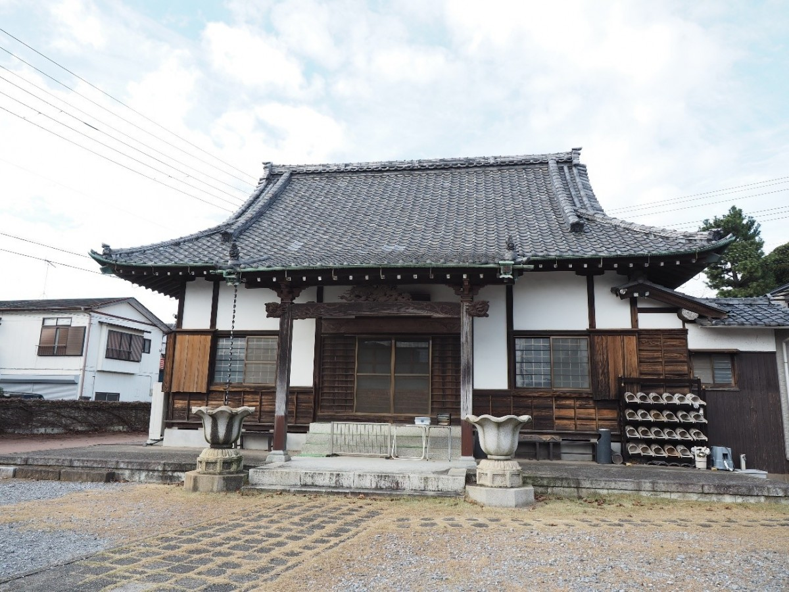
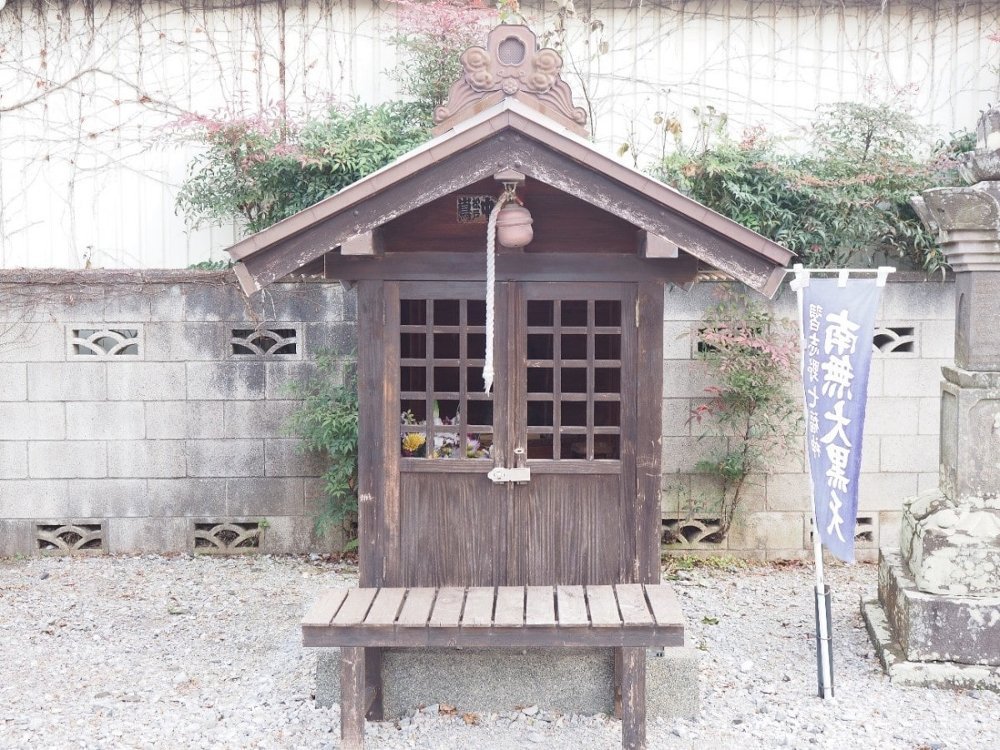
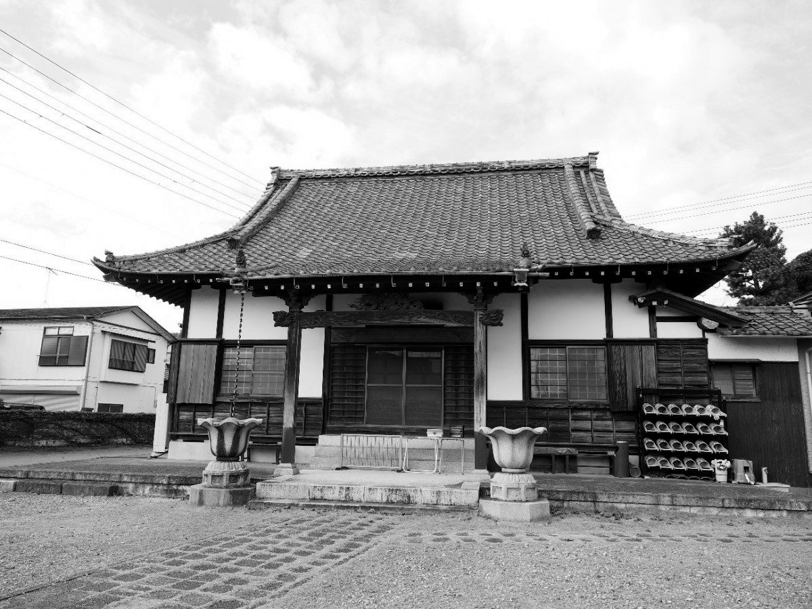

01
慈眼寺についてABOUT
日々に寄り添い、祈りをつなぐ。
慈眼寺は、千葉県習志野市鷺沼にある
真言宗豊山派のお寺です。
ご本尊は観世音菩薩。
境内には観音堂があり、
地域とともに祈りの時間を重ねてきました。
散歩の途中に。季節の節目に。
どうぞ、心静かにお参りください。
SEVEN GODS OF GOOD FORTUNE
福を招く、大黒天の寺。
慈眼寺は、習志野七福神の
大黒天札所です。
街を歩き、手を合わせる。
七つの福をめぐるひとときを、
慈眼寺から始めてみませんか。

02
慈眼寺の歩みHISTORY
このまちと、時を重ねて。
室町時代から続く寺院といわれる慈眼寺。
地域に根ざす祈りの場所として、
その歩みは今も続いています。

03
季節とともにANNUAL OBSERVANCES
年中行事
季節の節目に、
心を澄ませるひとときを。
- 1月1日・2日・3日
毎月7日 習志野七福神
習志野七福神めぐり
- 1月18日・5月18日・
9月18日 護摩供法要
於 慈眼寺観音堂
- 2月
節分会
- 3月
春彼岸
- 8月
盂蘭盆会
- 8月24日
施餓鬼会
- 9月
秋彼岸
04
お参りに際してVISIT & ACCESS
お参りのご案内
参拝時間
9:00—17:00午前9時から午後5時まで
日々の祈りに、どうぞお立ち寄りください。